복사 완료 알림이 열린 창의 흐린 배경 뒤에 가려짐 수정함
명령 창 · SQL 확인 창 · 가져오기 창에서 복사하면 "클립보드에 복사했어요." 알림이 대화상자 배경(블러) 아래에 그려져 읽을 수 없었습니다. 알림을 최상위 레이어(manual popover)로 띄우도록 바꿨고, 브라우저 회귀 테스트를 추가했습니다. 수정 후 화면은 2번 시나리오의 명령 창 스크린샷입니다.
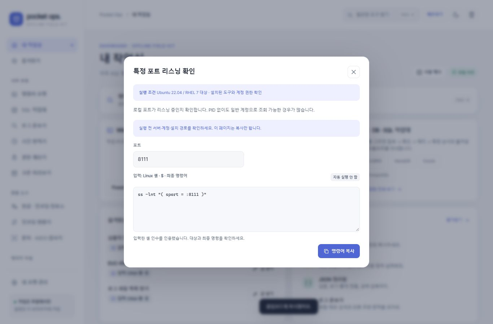
빌드한 pocket-ops.html을 실제 Chromium에서 로컬 파일로 열어 모든 메뉴를 화면 조작으로 사용하고, 단계마다 화면과 값을 기록했습니다.
명령 창 · SQL 확인 창 · 가져오기 창에서 복사하면 "클립보드에 복사했어요." 알림이 대화상자 배경(블러) 아래에 그려져 읽을 수 없었습니다. 알림을 최상위 레이어(manual popover)로 띄우도록 바꿨고, 브라우저 회귀 테스트를 추가했습니다. 수정 후 화면은 2번 시나리오의 명령 창 스크린샷입니다.

앱은 확인 창과 같은 LF 텍스트를 넘기지만 Windows의 Chromium 클립보드는 여러 줄 텍스트를 CRLF로 저장합니다. 글자 단위 비교는 줄바꿈 정규화 후 일치했고, 저장 파일(pocket-query.sql)은 LF 그대로입니다. SSH 터미널은 붙여넣을 때 줄바꿈을 변환하므로 csql> · SQL> 입력에는 영향이 없지만 바이트 비교 시 참고하세요.
테스트 도구가 문자열식 대기 조건을 쓰자 페이지의 Content-Security-Policy가 unsafe-eval 없음으로 차단했습니다. 로컬 파일로 열어도 스크립트 해시 CSP가 적용됨을 보여 줍니다.
시나리오 탐색기에서 연 것처럼 pocket-ops.html을 file://로 열기
기대 결과 설치·서버 없이 대시보드가 열리고 외부 요청이 없다
| 판정 | 확인 항목 | 실제 값 | 기대 값 |
|---|---|---|---|
| 통과 | 앱 시작 완료(html.app-ready) | true | true |
| 통과 | 실행 방식 | file: | file: |
| 통과 | 읽기 전용 대체 화면은 숨김 | false | false |
| 통과 | 보안 컨텍스트와 Web Crypto·Worker 사용 가능 | true,true,true | true,true,true |
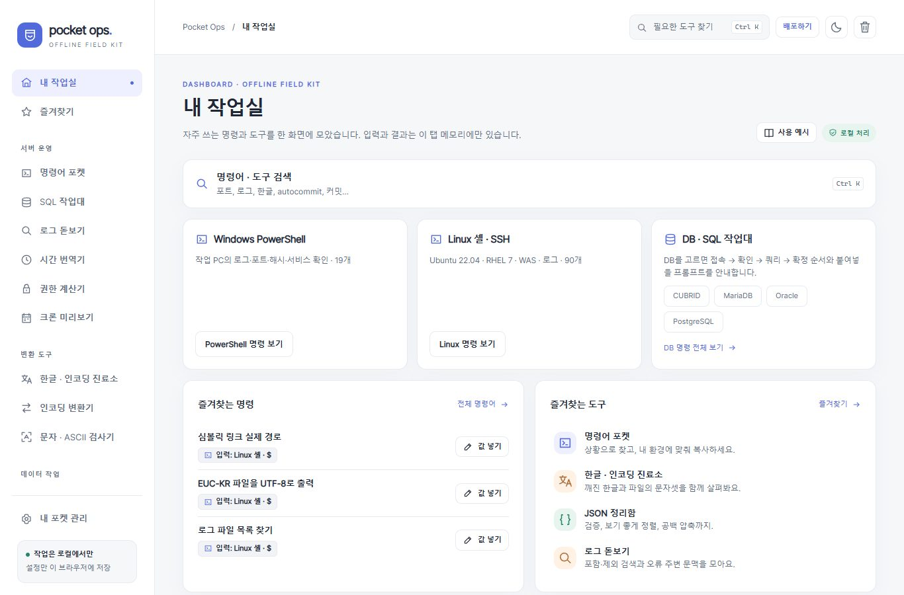
시나리오 검색 → 명령 값 입력 → 복사, 환경 카드와 DB 카드로 이동
기대 결과 검색 결과에서 연 명령에 입력한 값이 그대로 복사되고, 카드가 해당 환경·DB로 연다
| 판정 | 확인 항목 | 실제 값 | 기대 값 |
|---|---|---|---|
| 통과 | 사용 예시 링크가 화면 위쪽 제목 줄에 있음 | y=185px | 조건 판정 |
| 통과 | 가이드 창 제목 | 사용 예시 · 내 작업실 | 사용 예시 · 내 작업실 |
| 통과 | 예시 실행으로 검색창이 열림 | 1 | 1 |
| 통과 | 최종 명령어 | ss -lnt "( sport = :8111 )" | ss -lnt "( sport = :8111 )" |
| 통과 | 클립보드(브라우저 Clipboard API로 읽음) | ss -lnt "( sport = :8111 )" | ss -lnt "( sport = :8111 )" |
| 통과 | 복사 완료 알림이 열린 창 위(최상위 레이어)에 표시 | true | true |
| 통과 | 명령어 포켓이 Linux로 열림 | linux | linux |
| 통과 | SQL 작업대가 Oracle 기준 | 붙여넣을 곳: SQL> · SQL*Plus | SQL> |
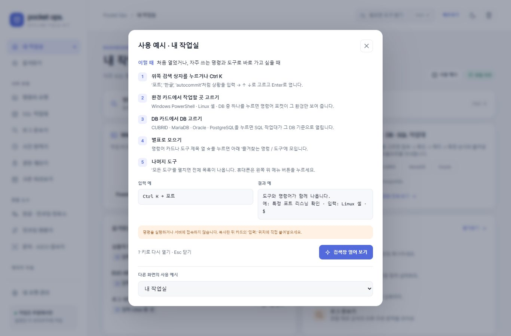
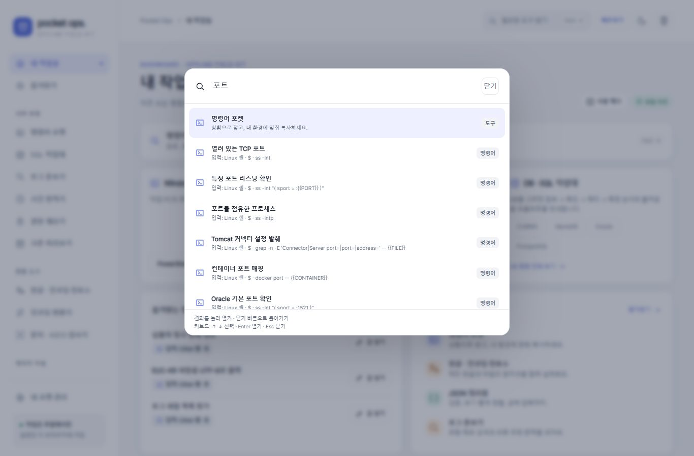
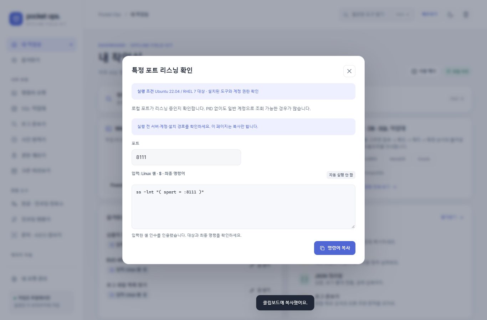
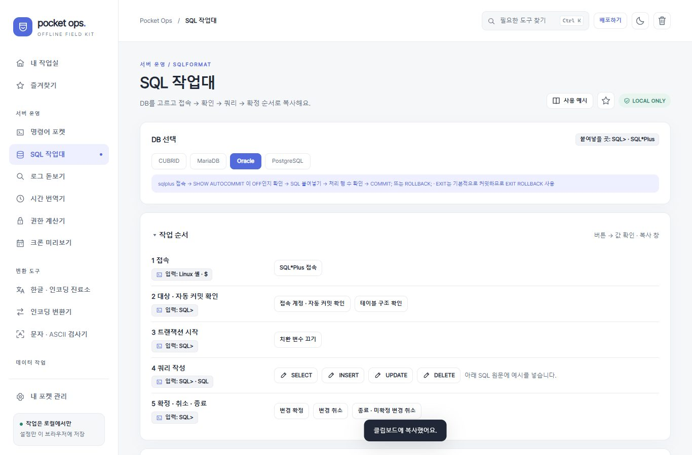
시나리오 검색 → 대체 명령(값 이어받기) → 원래 명령 복귀, 변경 명령 확인 체크, 내 명령어 추가
기대 결과 대안으로 넘어가도 입력값이 유지되고, 변경 명령은 확인 전 복사가 잠기며, 내 명령어가 목록에 저장된다
| 판정 | 확인 항목 | 실제 값 | 기대 값 |
|---|---|---|---|
| 통과 | 사용 예시 링크가 화면 위쪽 제목 줄에 있음 | y=184px | 조건 판정 |
| 통과 | 가이드 창 제목 | 사용 예시 · 명령어 포켓 | 사용 예시 · 명령어 포켓 |
| 통과 | 예시 실행으로 ‘포트’ 검색 | 포트 | 포트 |
| 통과 | 원래 명령 | pgrep -af -- 'java' | pgrep -af -- 'java' |
| 통과 | 대안이 입력값을 이어받음 | ps -ef | grep -F -- 'java' | ps -ef | grep -F -- 'java' |
| 통과 | 이어받은 값 안내 | 이전 명령에서 입력한 값을 이어받았습니다: PATTERN. 이 명령에도 맞는지 확인하세요. | 조건 판정 |
| 통과 | 원래 명령으로 복귀 | java | java |
| 통과 | 확인 체크 전 복사 잠김 | true | true |
| 통과 | 확인 체크 후 복사 가능 | true | true |
| 통과 | 복사된 명령 | kill -TERM 12345 | kill -TERM 12345 |
| 통과 | 내 명령어가 목록에 표시 | 1 | 1 |
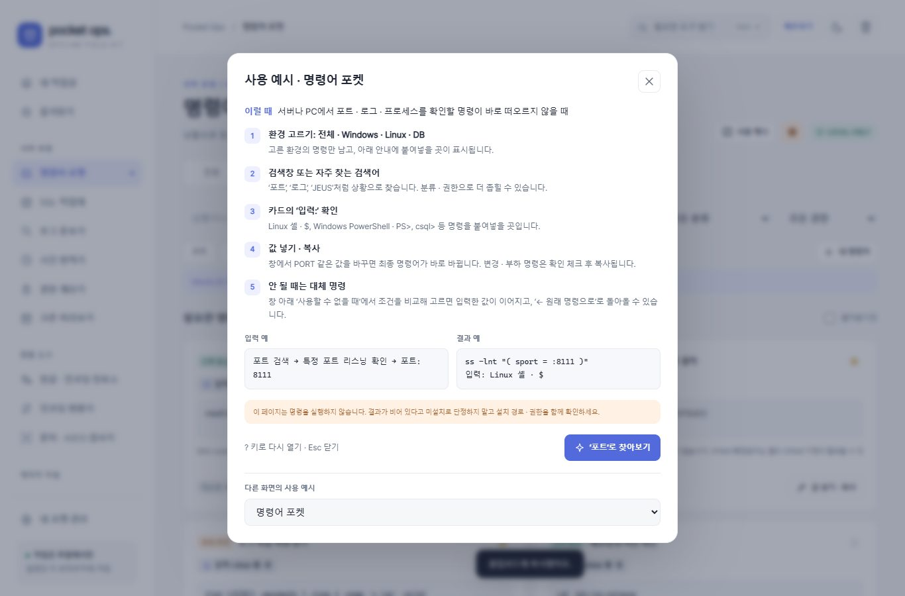
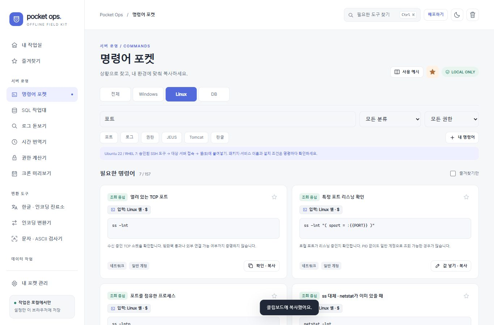
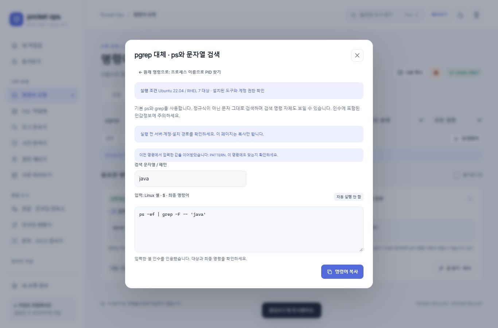
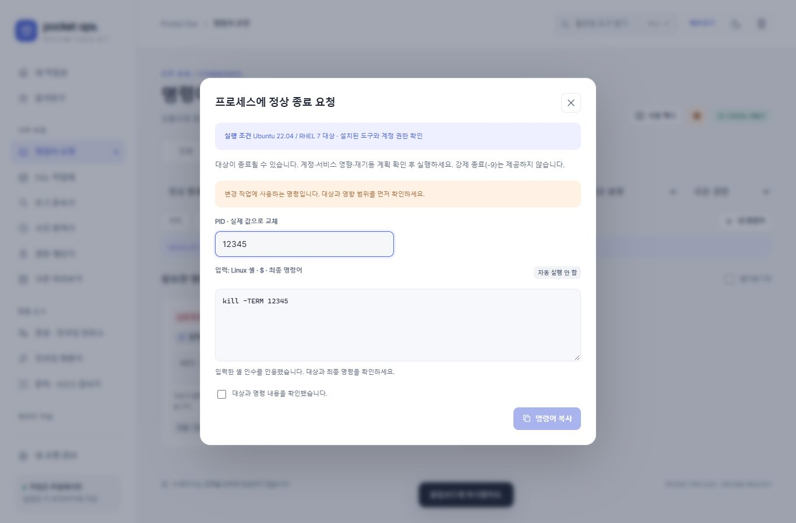
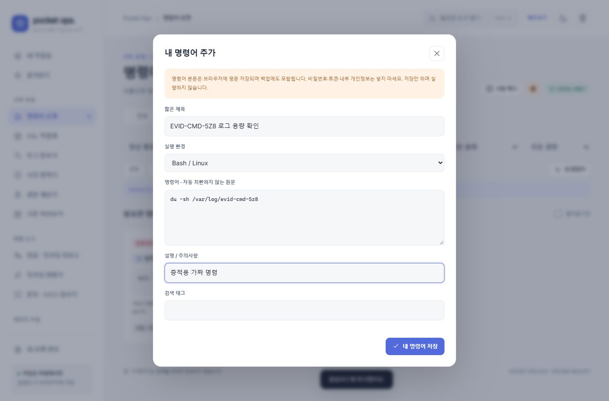
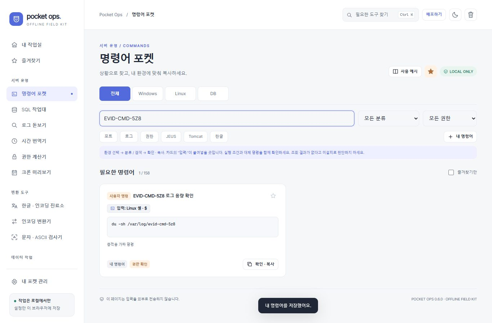
시나리오 MariaDB 접속 명령 → UPDATE 프리셋 수정 → WHERE 삭제 → 확인 후 복사·저장, Oracle 빈 줄 거부
기대 결과 확인 창에 보인 SQL이 클립보드·저장 파일과 같고, WHERE 없는 변경은 체크 전 잠긴다
| 판정 | 확인 항목 | 실제 값 | 기대 값 |
|---|---|---|---|
| 통과 | 사용 예시 링크가 화면 위쪽 제목 줄에 있음 | y=184px | 조건 판정 |
| 통과 | 가이드 창 제목 | 사용 예시 · SQL 작업대 | 사용 예시 · SQL 작업대 |
| 통과 | 예시 결과가 가이드의 결과 예와 같음 | update sample_items
set item_name = '새 이름',
updated_at = current_timestamp
where item_id = 'A001'; | update sample_items
set item_name = '새 이름',
updated_at = current_timestamp
where item_id = 'A001'; |
| 통과 | 접속 명령(비밀번호는 프롬프트에서 입력) | mysql -h '127.0.0.1' -u 'app_reader' -p --safe-updates 'appdb' | mysql -h '127.0.0.1' -u 'app_reader' -p --safe-updates 'appdb' |
| 통과 | WHERE 없음 경고 | WHERE 조건이 없습니다. 실행하면 테이블의 모든 행이 변경됩니다.
예시 테이블 pocket_ops_sample이 그대로 있습니다. 실제 테이블명과 키 값으로 바꿨는지 확인하세요. | 조건 판정 |
| 통과 | 확인 체크 전 복사 잠김 | true | true |
| 통과 | 클립보드 = 확인 창에 보인 SQL(줄바꿈 정규화 후 글자 단위 비교) | UPDATE pocket_ops_sample
SET item_name = 'EVID-SQL-5Z8' | UPDATE pocket_ops_sample
SET item_name = 'EVID-SQL-5Z8' |
| 통과 | 클립보드의 줄바꿈 형식(기록) | CRLF | 조건 판정 |
| 통과 | 저장 파일 = 확인 창에 보인 SQL | UPDATE pocket_ops_sample
SET item_name = 'EVID-SQL-5Z8' | UPDATE pocket_ops_sample
SET item_name = 'EVID-SQL-5Z8' |
| 통과 | SQL*Plus 빈 줄 거부 | status error | 조건 판정 |
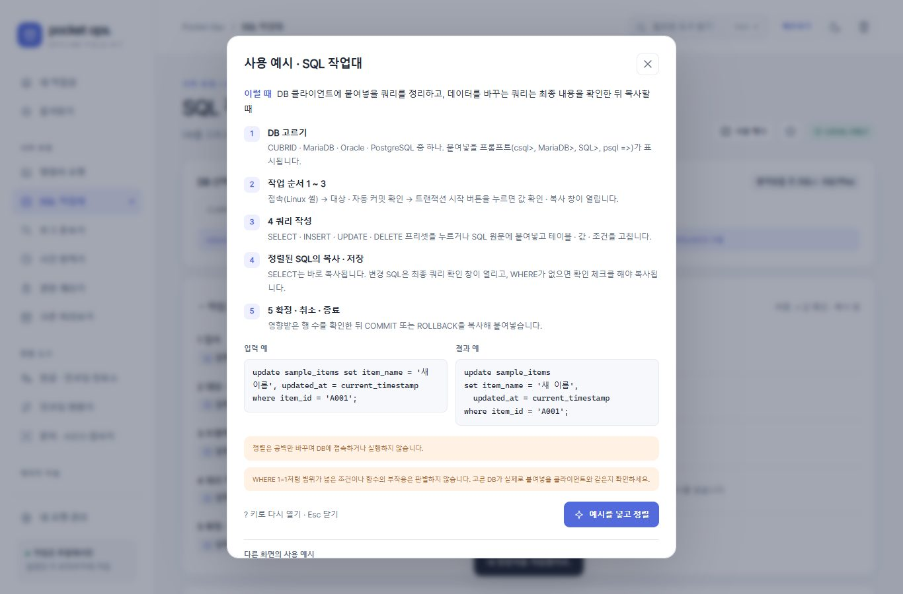
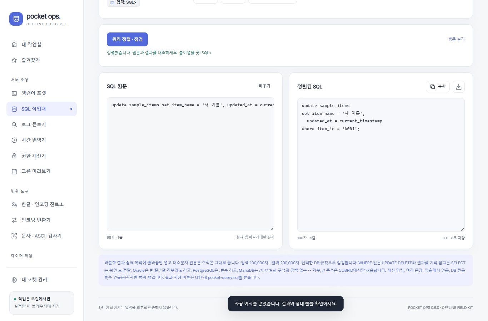
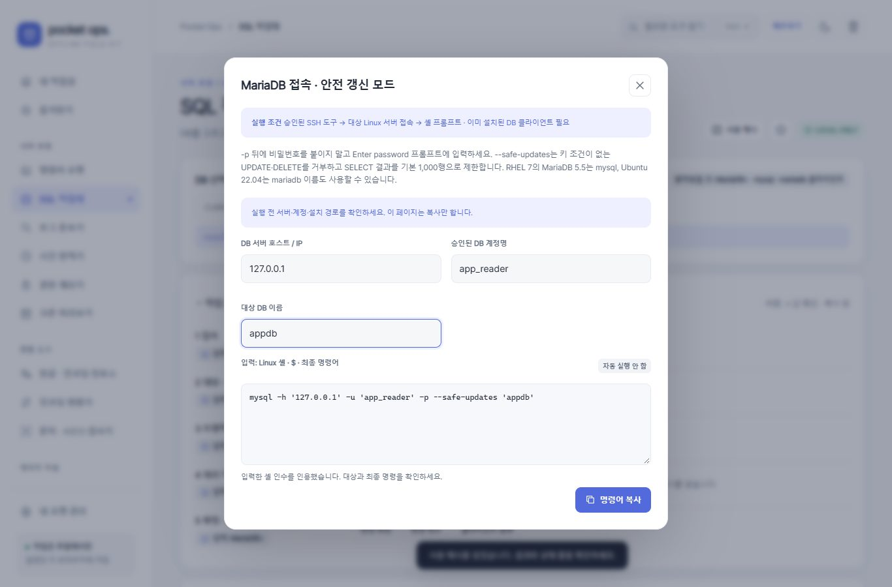
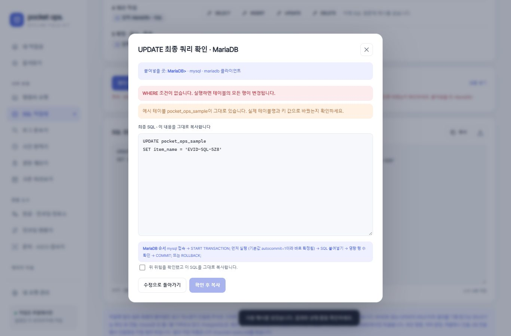
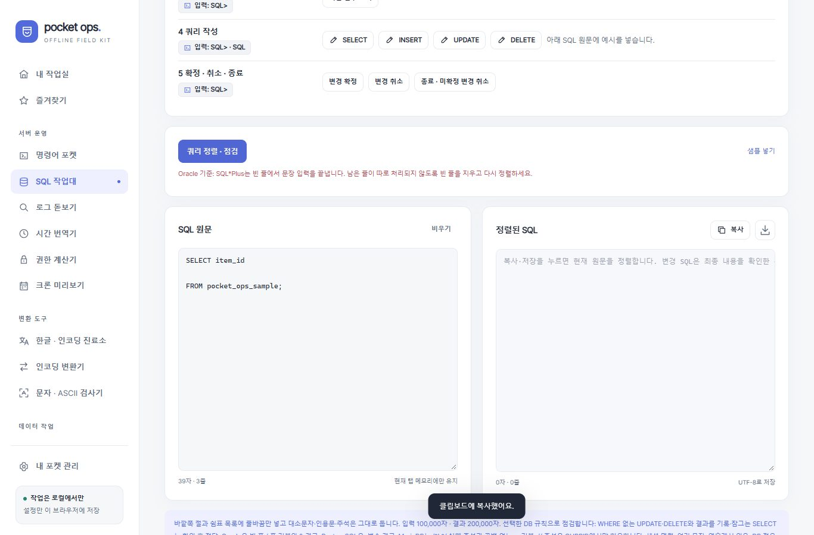
시나리오 깨진 문자열 복구 후보, EUC-KR(CP949) 원본 파일 다시 읽기 → UTF-8 저장
기대 결과 CP949 파일이 Python cp949 디코딩과 같은 한글로 보이고, 저장 파일이 UTF-8로 같은 내용이다
| 판정 | 확인 항목 | 실제 값 | 기대 값 |
|---|---|---|---|
| 통과 | 사용 예시 링크가 화면 위쪽 제목 줄에 있음 | y=184px | 조건 판정 |
| 통과 | 가이드 창 제목 | 사용 예시 · 한글 · 인코딩 진료소 | 사용 예시 · 한글 · 인코딩 진료소 |
| 통과 | 예시 결과가 가이드의 결과 예와 같음 | 안녕하세요 | 안녕하세요 |
| 통과 | 화면 결과 = Python cp949 디코딩(줄바꿈 LF 표시) | Pocket Ops 인코딩 샘플
한글 테스트: 안녕하세요.
확장 한글: 갂 똠
이 파일에는 실제 업무 자료가 없습니다.
| Pocket Ops 인코딩 샘플
한글 테스트: 안녕하세요.
확장 한글: 갂 똠
이 파일에는 실제 업무 자료가 없습니다.
|
| 통과 | UTF-8로 저장한 파일 = 원문(CRLF 유지) | Pocket Ops 인코딩 샘플
한글 테스트: 안녕하세요.
확장 한글: 갂 똠
이 파일에는 실제 업무 자료가 없습니다.
| Pocket Ops 인코딩 샘플
한글 테스트: 안녕하세요.
확장 한글: 갂 똠
이 파일에는 실제 업무 자료가 없습니다.
|
시나리오 큰 숫자 보존 정리, 문법 오류, 압축 후 복사
기대 결과 숫자 표기를 바꾸지 않고, 오류는 결과를 비우고 원인을 표시한다
| 판정 | 확인 항목 | 실제 값 | 기대 값 |
|---|---|---|---|
| 통과 | 사용 예시 링크가 화면 위쪽 제목 줄에 있음 | y=184px | 조건 판정 |
| 통과 | 가이드 창 제목 | 사용 예시 · JSON 정리함 | 사용 예시 · JSON 정리함 |
| 통과 | 예시 결과가 가이드의 결과 예와 같음 | {
"id": 900719925474099312345,
"amount": 1.2300,
"tags": [
"한글",
"offline"
]
} | {
"id": 900719925474099312345,
"amount": 1.2300,
"tags": [
"한글",
"offline"
]
} |
| 통과 | 문법 오류 표시 | status error | 조건 판정 |
| 통과 | 원문의 숫자 표기를 그대로 유지(Python으로 추출한 숫자 토큰) | [] | [] |
시나리오 URL 인코딩, Base64 디코딩
기대 결과 Python urllib/base64와 같은 결과
| 판정 | 확인 항목 | 실제 값 | 기대 값 |
|---|---|---|---|
| 통과 | 사용 예시 링크가 화면 위쪽 제목 줄에 있음 | y=184px | 조건 판정 |
| 통과 | 가이드 창 제목 | 사용 예시 · 인코딩 변환기 | 사용 예시 · 인코딩 변환기 |
| 통과 | 예시 결과가 가이드의 결과 예와 같음 | %ED%95%9C%EA%B8%80%20%EC%9D%B4%EB%A6%84%26x%3D1 | %ED%95%9C%EA%B8%80%20%EC%9D%B4%EB%A6%84%26x%3D1 |
| 통과 | Python quote와 같음 | %ED%95%9C%EA%B8%80%20%EC%9D%B4%EB%A6%84%26x%3D1 | %ED%95%9C%EA%B8%80%20%EC%9D%B4%EB%A6%84%26x%3D1 |
| 통과 | Base64 디코딩 = Python base64 | 한글 | 한글 |
시나리오 목록 정리 후 CRLF로 저장
기대 결과 중복·빈 줄 제거, 자연 정렬, 저장 파일 줄바꿈이 CRLF
| 판정 | 확인 항목 | 실제 값 | 기대 값 |
|---|---|---|---|
| 통과 | 사용 예시 링크가 화면 위쪽 제목 줄에 있음 | y=184px | 조건 판정 |
| 통과 | 가이드 창 제목 | 사용 예시 · 텍스트 다듬기 | 사용 예시 · 텍스트 다듬기 |
| 통과 | 예시 결과가 가이드의 결과 예와 같음 | item1
item2
item10 | item1
item2
item10 |
| 통과 | 저장 파일 바이트(CRLF) | b'item1\r\nitem2\r\nitem10' | b'item1\r\nitem2\r\nitem10' |
시나리오 설정 변경 전후 비교, 바뀐 줄만 보기, 보고서 저장
기대 결과 추가 1·삭제 1·동일 2, 보고서에 +/− 줄
| 판정 | 확인 항목 | 실제 값 | 기대 값 |
|---|---|---|---|
| 통과 | 사용 예시 링크가 화면 위쪽 제목 줄에 있음 | y=184px | 조건 판정 |
| 통과 | 가이드 창 제목 | 사용 예시 · 변경점 비교 | 사용 예시 · 변경점 비교 |
| 통과 | 예시 결과가 가이드의 결과 예와 같음 | 1추가1삭제2동일 | 1추가1삭제2동일 |
| 통과 | 바뀐 줄만 표시 | 2 | 2 |
| 통과 | 보고서에 삭제·추가 줄 | Pocket Ops · 줄 단위 비교 보고서 (git patch 아님)
- 1 | server.port=8080
+ 1 | server.port=8111
2 2 | pool.max=100
3 3 | encoding=UTF-8 | 조건 판정 |
시나리오 오류 주변 문맥 추리기, UTF-8 로그 파일 열기
기대 결과 결과가 Python 필터(대소문자 무시)와 같다
| 판정 | 확인 항목 | 실제 값 | 기대 값 |
|---|---|---|---|
| 통과 | 사용 예시 링크가 화면 위쪽 제목 줄에 있음 | y=184px | 조건 판정 |
| 통과 | 가이드 창 제목 | 사용 예시 · 로그 돋보기 | 사용 예시 · 로그 돋보기 |
| 통과 | 예시 결과가 가이드의 결과 예와 같음 | 09:00:02 WARN pool nearly full
09:00:03 ERROR request failed
java.sql.SQLException: timeout | 09:00:02 WARN pool nearly full
09:00:03 ERROR request failed
java.sql.SQLException: timeout |
| 통과 | Python 필터와 같음 | 2026-10-03 09:00:02 ERROR request failed | 2026-10-03 09:00:02 ERROR request failed |
시나리오 문자열 목록 → IN 조건, 숫자 모드 잘못된 값
기대 결과 작은따옴표 이스케이프, 숫자 모드는 문자를 거부
| 판정 | 확인 항목 | 실제 값 | 기대 값 |
|---|---|---|---|
| 통과 | 사용 예시 링크가 화면 위쪽 제목 줄에 있음 | y=184px | 조건 판정 |
| 통과 | 가이드 창 제목 | 사용 예시 · SQL IN 도우미 | 사용 예시 · SQL IN 도우미 |
| 통과 | 예시 결과가 가이드의 결과 예와 같음 | ITEM_ID IN (
'A001', 'O''Brien', '00123'
) | ITEM_ID IN (
'A001', 'O''Brien', '00123'
) |
| 통과 | 숫자가 아닌 값 거부 | status error | 조건 판정 |
| 통과 | 오류 시 결과 비움 | | 조건 판정 |
시나리오 숫자 코드 → 문자, 숨은 공백 분석
기대 결과 U+200B, NBSP가 이름으로 표시된다
| 판정 | 확인 항목 | 실제 값 | 기대 값 |
|---|---|---|---|
| 통과 | 사용 예시 링크가 화면 위쪽 제목 줄에 있음 | y=184px | 조건 판정 |
| 통과 | 가이드 창 제목 | 사용 예시 · 문자 · ASCII 검사기 | 사용 예시 · 문자 · ASCII 검사기 |
| 통과 | 예시 결과가 가이드의 결과 예와 같음 | A한글😀 | A한글😀 |
| 통과 | ZERO WIDTH SPACE·NBSP 표시 | # 문자 / 제어문자 이름 코드 포인트 10진수 ASCII UTF-8 HEX
1 A U+0041 65 65 41
2 SPACE U+0020 32 32 20
3 한 U+D55C 54620 — ED 95 9C
4 글 U+AE00 44544 — EA B8 80
5 SPACE U+0020 32 32 20
6 😀 U+1F600 128512 — F0 9F 98 80
7 TAB U+0009 9 9 09
8 ZERO WIDTH SPACE U+200B 8203 — E2 80 8B
9 NBSP U+00A0 160 — C2 A0
10 LF U+000A 10 10 0A | 조건 판정 |
시나리오 타임스탬프 → 날짜, KST 날짜 → 타임스탬프
기대 결과 Python datetime과 같은 값
| 판정 | 확인 항목 | 실제 값 | 기대 값 |
|---|---|---|---|
| 통과 | 사용 예시 링크가 화면 위쪽 제목 줄에 있음 | y=184px | 조건 판정 |
| 통과 | 가이드 창 제목 | 사용 예시 · 시간 번역기 | 사용 예시 · 시간 번역기 |
| 통과 | 예시 결과가 가이드의 결과 예와 같음 | UTC 2023-11-14 22:13:20.000 UTC+00:00
KST 2023-11-15 07:13:20.000 UTC+09:00
Unix 초 1700000000
Unix ms 1700000000000
ISO 8601 2023-11-14T22:13:20.000Z | UTC 2023-11-14 22:13:20.000 UTC+00:00
KST 2023-11-15 07:13:20.000 UTC+09:00
Unix 초 1700000000
Unix ms 1700000000000
ISO 8601 2023-11-14T22:13:20.000Z |
| 통과 | Unix 초 = Python datetime | 1795219200 | 1795219200 |
시나리오 체크박스로 644 만들기 → 확인 후 복사
기대 결과 rw-r--r--, 확인 창을 거쳐 복사
| 판정 | 확인 항목 | 실제 값 | 기대 값 |
|---|---|---|---|
| 통과 | 사용 예시 링크가 화면 위쪽 제목 줄에 있음 | y=184px | 조건 판정 |
| 통과 | 가이드 창 제목 | 사용 예시 · 권한 계산기 | 사용 예시 · 권한 계산기 |
| 통과 | 예시 결과가 가이드의 결과 예와 같음 | chmod 750 -- '/app/batch/run.sh' | chmod 750 -- '/app/batch/run.sh' |
| 통과 | rwx 표기 = Python 계산 | rwxr-x--- | rwxr-x--- |
| 통과 | 복사 전 확인 창 | 실제 실행 시 파일/디렉터리 권한이 바뀝니다. 대상과 권한을 확인했나요? | 조건 판정 |
| 통과 | 복사된 명령 | chmod 644 -- '/app/conf/server.properties' | chmod 644 -- '/app/conf/server.properties' |
시나리오 평일 9시 30분 예약식의 다음 실행
기대 결과 Python으로 계산한 평일 09:30 5회와 같다
| 판정 | 확인 항목 | 실제 값 | 기대 값 |
|---|---|---|---|
| 통과 | 사용 예시 링크가 화면 위쪽 제목 줄에 있음 | y=184px | 조건 판정 |
| 통과 | 가이드 창 제목 | 사용 예시 · 크론 미리보기 | 사용 예시 · 크론 미리보기 |
| 통과 | 예시 결과가 가이드의 결과 예와 같음 | 1. 2026-11-23 09:30:00 KST (월)
2. 2026-11-24 09:30:00 KST (화)
3. 2026-11-25 09:30:00 KST (수)
4. 2026-11-26 09:30:00 KST (목)
5. 2026-11-27 09:30:00 KST (금) | 1. 2026-11-23 09:30:00 KST (월)
2. 2026-11-24 09:30:00 KST (화)
3. 2026-11-25 09:30:00 KST (수)
4. 2026-11-26 09:30:00 KST (목)
5. 2026-11-27 09:30:00 KST (금) |
| 통과 | 다음 5회 = Python 계산 | ["2026-11-23 09:30:00", "2026-11-24 09:30:00", "2026-11-25 09:30:00", "2026-11-26 09:30:00", "2026-11-27 09:30:00"] | ["2026-11-23 09:30:00", "2026-11-24 09:30:00", "2026-11-25 09:30:00", "2026-11-26 09:30:00", "2026-11-27 09:30:00"] |
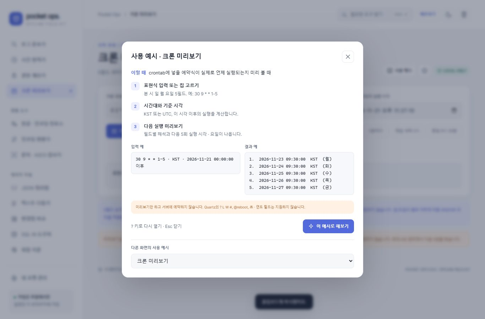
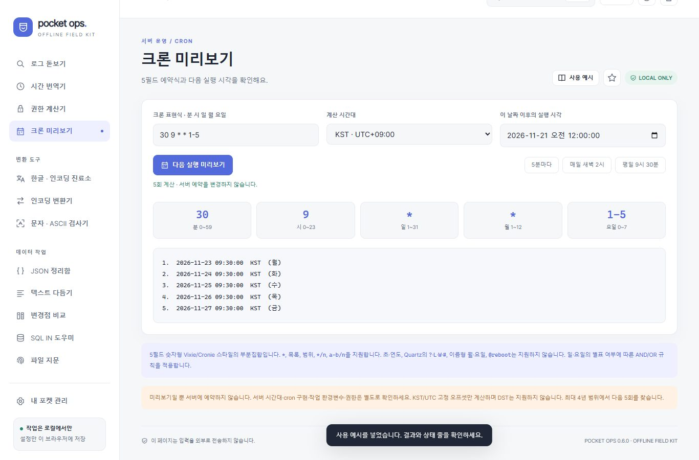
시나리오 텍스트 기대값 일치, 파일 SHA-256
기대 결과 file://에서 Web Crypto가 동작하고 Python hashlib과 같다
| 판정 | 확인 항목 | 실제 값 | 기대 값 |
|---|---|---|---|
| 통과 | 사용 예시 링크가 화면 위쪽 제목 줄에 있음 | y=184px | 조건 판정 |
| 통과 | 가이드 창 제목 | 사용 예시 · 파일 지문 | 사용 예시 · 파일 지문 |
| 통과 | 예시 결과가 가이드의 결과 예와 같음 | ba7816bf8f01cfea414140de5dae2223b00361a396177a9cb410ff61f20015ad | ba7816bf8f01cfea414140de5dae2223b00361a396177a9cb410ff61f20015ad |
| 통과 | 비교 결과 | 일치합니다. 같은 해시 값입니다. | 조건 판정 |
| 통과 | 파일 SHA-256 = Python hashlib | aa41f7637f461127eac846ee2d82af8e7c5f2e5b6aee42d5c819158908884aaf | aa41f7637f461127eac846ee2d82af8e7c5f2e5b6aee42d5c819158908884aaf |
시나리오 캡처 확인, 과도한 역추적 패턴 중단
기대 결과 Worker에서 실행하고 약 1.2초 후 중단 안내
| 판정 | 확인 항목 | 실제 값 | 기대 값 |
|---|---|---|---|
| 통과 | 사용 예시 링크가 화면 위쪽 제목 줄에 있음 | y=184px | 조건 판정 |
| 통과 | 가이드 창 제목 | 사용 예시 · 정규식 실험실 | 사용 예시 · 정규식 실험실 |
| 통과 | 예시 결과가 가이드의 결과 예와 같음 | [
{"index":0,"match":"ERROR connection timeout","captures":["ERROR","connection timeout"],"groups":null},
{"index":36,"match":"WARN pool almost full","captures":["WARN","pool almost full"],"groups":null}
] | [
{"index":0,"match":"ERROR connection timeout","captures":["ERROR","connection timeout"],"groups":null},
{"index":36,"match":"WARN pool almost full","captures":["WARN","pool almost full"],"groups":null}
] |
| 통과 | 시간 제한으로 중단 | 약 1.2초 제한을 초과하여 정규식을 중단했습니다. 패턴이나 입력을 단순하게 바꿔 보세요. | 조건 판정 |
| 통과 | 화면이 멈추지 않음(중단까지 걸린 시간) | 1.3초 | 조건 판정 |
시나리오 도구와 명령어 별표 → 즐겨찾기 화면
기대 결과 별표한 도구와 명령이 즐겨찾기와 대시보드에 모인다
| 판정 | 확인 항목 | 실제 값 | 기대 값 |
|---|---|---|---|
| 통과 | 사용 예시 링크가 화면 위쪽 제목 줄에 있음 | y=185px | 조건 판정 |
| 통과 | 가이드 창 제목 | 사용 예시 · 즐겨찾기 | 사용 예시 · 즐겨찾기 |
| 통과 | 즐겨찾는 도구에 정규식 실험실 | 1 | 1 |
| 통과 | 즐겨찾는 명령어에 cmd-044 | 1 | 1 |
시나리오 저장 범위 확인 → 설정 백업 → 배포 ZIP → 초기화 → 백업 가져오기 → 다시 열기 → 입력 비우기
기대 결과 저장소·백업에는 내 명령어만, 배포 ZIP에는 작업 데이터와 설정이 없고 HTML이 빌드와 같다
| 판정 | 확인 항목 | 실제 값 | 기대 값 |
|---|---|---|---|
| 통과 | 사용 예시 링크가 화면 위쪽 제목 줄에 있음 | y=185px | 조건 판정 |
| 통과 | 가이드 창 제목 | 사용 예시 · 내 포켓 관리 | 사용 예시 · 내 포켓 관리 |
| 통과 | localStorage 키 | ["pocket-ops:v1"] | ["pocket-ops:v1"] |
| 통과 | 저장소에 내 명령어 표식 있음 | true | true |
| 통과 | 저장소에 SQL·로그·JSON 작업 입력 없음 | [] | [] |
| 통과 | 백업 필드 | ["app", "cmdFavs", "customCommands", "exportedAt", "theme", "toolFavs", "version"] | ["app", "cmdFavs", "customCommands", "exportedAt", "theme", "toolFavs", "version"] |
| 통과 | 백업에 작업 입력 표식 없음 | [] | [] |
| 통과 | ZIP 구성 | ["CHANGELOG.md", "README_KO.md", "START_HERE.txt", "pocket-ops.html"] | ["CHANGELOG.md", "README_KO.md", "START_HERE.txt", "pocket-ops.html"] |
| 통과 | ZIP 안의 HTML = 빌드한 pocket-ops.html | d125d89334dba6b858ce95fbe55d64488b20b1cb4165ddc82ac45bae87678cbd | d125d89334dba6b858ce95fbe55d64488b20b1cb4165ddc82ac45bae87678cbd |
| 통과 | ZIP = 저장소의 배포 ZIP | dae50903e5db8512fce67b874292e1a56212541610018cdf444b1ce9fbb1a37f | dae50903e5db8512fce67b874292e1a56212541610018cdf444b1ce9fbb1a37f |
| 통과 | ZIP에 증적 표식(작업 입력·내 명령어) 없음 | [] | [] |
| 통과 | 초기화 후 내 명령어 0개 | 0 | 0 |
| 통과 | 가져온 뒤 내 명령어 복원 | ["EVID-CMD-5Z8 로그 용량 확인"] | ["EVID-CMD-5Z8 로그 용량 확인"] |
| 통과 | 다시 열면 작업 입력 없음 | | 조건 판정 |
| 통과 | 다시 열어도 즐겨찾기 유지(file:// 저장소) | 1 | 1 |
| 통과 | 입력 비우기 후 로그 입력 없음 | | 조건 판정 |
시나리오 어두운 테마로 전환
기대 결과 어두운 테마가 적용되고 설정에 저장된다
| 판정 | 확인 항목 | 실제 값 | 기대 값 |
|---|---|---|---|
| 통과 | data-theme | dark | dark |
시나리오 360px 터치 화면에서 메뉴 → 명령 찾기 → 값 입력 → 복사, 사용 예시
기대 결과 가로 넘침 없이 첫 화면에 사용 예시와 첫 명령이 보이고, 값이 복사된다
| 판정 | 확인 항목 | 실제 값 | 기대 값 |
|---|---|---|---|
| 통과 | 가로 넘침 없음 | true | true |
| 통과 | 첫 명령 카드가 첫 화면 안에서 시작 | y=688px | 조건 판정 |
| 통과 | 복사된 명령(브라우저 Clipboard API) | ss -lnt "( sport = :9090 )" | ss -lnt "( sport = :9090 )" |
| 통과 | 확인한 DELETE가 복사됨 | DELETE FROM pocket_ops_sample
WHERE item_id = 1001
AND item_name = 'SAMPLE'; | DELETE FROM pocket_ops_sample
WHERE item_id = 1001
AND item_name = 'SAMPLE'; |
시나리오 JavaScript를 끈 브라우저로 같은 파일 열기
기대 결과 빈 화면 대신 읽기 전용 명령어 참고와 입력 위치가 보인다
| 판정 | 확인 항목 | 실제 값 | 기대 값 |
|---|---|---|---|
| 통과 | 읽기 전용 참고 표시 | true | true |
| 통과 | 모든 명령에 입력 위치 표시 | 157 | 157 |
시나리오 보이는 Chromium 창에서 복사 버튼 → Windows 클립보드 읽기
기대 결과 Get-Clipboard 값이 화면의 최종 명령·SQL과 같다
| 판정 | 확인 항목 | 실제 값 | 기대 값 |
|---|---|---|---|
| 통과 | Windows 클립보드 = 최종 명령 | ss -lnt "( sport = :8443 )" | ss -lnt "( sport = :8443 )" |
| 통과 | Windows 클립보드 = 확인 창의 SQL(줄바꿈 포함 비교) | UPDATE pocket_ops_sample
SET item_name = 'UPDATED'
WHERE item_id = 1001
AND item_name = 'SAMPLE'; | UPDATE pocket_ops_sample
SET item_name = 'UPDATED'
WHERE item_id = 1001
AND item_name = 'SAMPLE'; |
| 통과 | 작업 전 클립보드 텍스트 복원(내용은 기록하지 않음) | true | true |